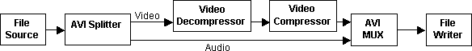
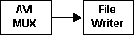
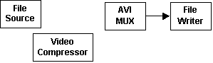

[The feature associated with this page, DirectShow, is a legacy feature. It has been superseded by MediaPlayer, IMFMediaEngine, and Audio/Video Capture in Media Foundation. Those features have been optimized for Windows 10 and Windows 11. Microsoft strongly recommends that new code use MediaPlayer, IMFMediaEngine and Audio/Video Capture in Media Foundation instead of DirectShow, when possible. Microsoft suggests that existing code that uses the legacy APIs be rewritten to use the new APIs if possible.]
A typical filter graph for AVI file recompression looks like the following:

The AVI Splitter Filter pulls data from the File Source (Async) Filter and parses it into video and audio streams. The video decompressor decodes the compressed video, where it is recompressed by the video compressor. The choice of decompressors depends on the source file; it will be handled automatically by Intelligent Connect. The application must choose the compressor, typically by presenting a list to the user. (See Choosing a Compression Filter.)
The compressed video then goes to the AVI Mux Filter. The audio stream in this example is not compressed, so it goes directly from the AVI Splitter to the AVI Mux. The AVI Mux interleaves the two streams, and the File Writer Filter writes the output to disk. Note that the AVI Mux is required even if the original file does not have an audio stream.
The easiest way to build this filter graph is to use the Capture Graph Builder, which is a DirectShow component for building capture graphs and other custom filter graphs.
Start by calling CoCreateInstance to create the Capture Graph Builder:
ICaptureGraphBuilder2 *pBuild = NULL;
hr = CoCreateInstance(CLSID_CaptureGraphBuilder2,
NULL, CLSCTX_INPROC_SERVER,
IID_ICaptureGraphBuilder2, (void **)&pBuild);
Then use the Capture Graph Builder to build the filter graph:
The following sections explain each of these steps.
Build the Rendering Section
To build the rendering section of the graph, call the ICaptureGraphBuilder2::SetOutputFileName method. This method takes input parameters that specify the media subtype for the output and the name of the output file. It returns pointers to the MUX filter and the file writer. The MUX filter is needed for the next stage of graph building. The pointer to the file writer is not needed for this example, so that parameter can be NULL:
IBaseFilter *pMux = NULL;
hr = pBuild->SetOutputFileName(
&MEDIASUBTYPE_Avi, // File type.
wszOutputFile, // File name, as a wide-character string.
&pMux, // Receives a pointer to the multiplexer.
NULL); // Receives a pointer to the file writer.
When the method returns, the MUX filter has an outstanding reference count, so be sure to release the pointer later.
The following diagram shows the filter graph at this point.

The MUX filter exposes two interfaces for controlling the AVI format:
Add the Source and Compression Filters
The next step is to add the source and compression filters to the filter graph. The Capture Graph Builder automatically creates an instance of the Filter Graph Manager when you call SetOutputFileName. Get a pointer to it by calling the ICaptureGraphBuilder2::GetFiltergraph method:
IGraphBuilder *pGraph = NULL;
hr = pBuild->GetFiltergraph(&pGraph);
Now call the IGraphBuilder::AddSourceFilter method to add the Async File Source filter, and the IFilterGraph::AddFilter method to add the video compressor:
IBaseFilter *pSrc = NULL;
hr = pGraph->AddSourceFilter(wszInputFile, L"Source Filter", &pSrc);
hr = pGraph->AddFilter(pVComp, L"Compressor");
At this point, the source filter and the compression filter are not connected to anything else in the graph, as shown in the following illustration:

Connect the Source to the Mux
The final step is to connect the source filter to the AVI Mux filter, through the video compressor. Use the ICaptureGraphBuilder2::RenderStream method, which connects an output pin on the source filter to a specified sink filter, optionally through a compression filter.
The first two parameters specify which of the source filter's pins to connect, by designating a pin category and a media type. The Async File Source filter has only one output pin, so these parameters should be NULL. The next three parameters specify the source filter, the compression filter (if any), and the Mux filter.
The following code example renders the video stream through the video compressor:
hr = pBuild->RenderStream(
NULL, // Output pin category
NULL, // Media type
pSrc, // Source filter
pVComp, // Compression filter
pMux); // Sink filter (the AVI Mux)
The following diagram shows the filter graph so far.
Assuming that the source file has an audio stream, the AVI Splitter filter has created an output pin for the audio. To connect this pin, call RenderStream again:
hr = pBuild->RenderStream(NULL, NULL, pSrc, NULL, pMux);
Here, no compression filter is specified. The source filter's output pin is already connected, so the RenderStream method searches for an unconnected output pin on the splitter filter. It finds the audio pin and connects it directly to the MUX filter. If the source file does not have an audio stream, the second call to RenderStream will fail. This is expected behavior. The graph is complete after the first call to RenderStream, so the failure in the second call is harmless.
In this example, the order of the two RenderStream calls is important. Because the second call does not specify a compressor, it will connect any unconnected pin from the AVI Splitter. If you make this call before the other one, it might connect the video stream to the AVI Mux, without your video compressor. Therefore, the more specific call (with the compression filter) must happen first.
The previous discussion has assumed that the source file is an AVI file. However, this technique also works with other file types, such as MPEG files. The resulting filter graph will be somewhat different.
Â
Â